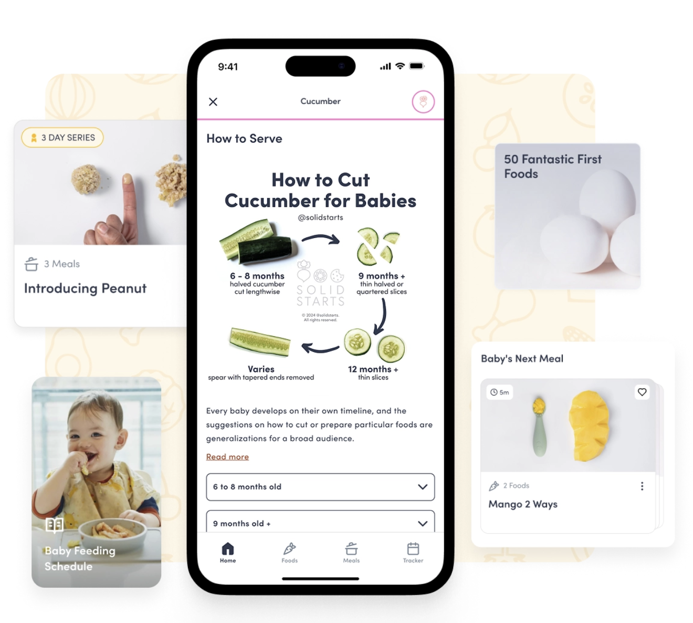

400+

"이 음식, 줘도 될까요?"
처음 이유식·유아식을 시작하시면
검색해 보셔도 답이 갈리지요 —
'아보카도 언제부터?'
'호두 알러지는?'
'바나나는 어떻게 잘라야 하나?'
같은 질문에도
출처마다 답이 달라
한참 찾으시다
지치시는 경우가 많습니다.
"미국에는 음식 하나하나에 카드 한 장이 있습니다."
이름은 'Solid Starts'.
영유아 첫 음식 데이터베이스로,
지금까지 400가지가 넘는 음식이
하나씩 정리되어 있습니다.
각 음식 카드에 들어가는 정보 — 연령별 권고, 자르는 모양, 질식 위험 여부, 알러지 표지, 보관·조리 팁까지.
이 자료는 누구나 무료로 볼 수 있습니다.
서비스 공식 약속이
'free, forever'라고 명시되어 있지요.
소아과 의사·영양사·알러지 전문의 등
6명의 임상 전문가가
음식 한 가지마다 검토 후 게시한다고
공개되어 있습니다.
어디서 보시나요?
- 웹사이트 (영문): https://solidstarts.com/foods
- 모바일 앱: 앱스토어(iOS) · Play 스토어(Android) 에서 'Solid Starts' 검색
영어가 부담스러우셔도
음식 사진과 자르는 법 도식이 직관적이라
충분히 활용하실 수 있습니다.
"한국 공식 표준을 먼저, Solid Starts는 보조 참고로."
다만 Solid Starts는
미국 영유아 식이 방식인 BLW
— Baby-Led Weaning, 직역 "아기 주도 이유식" —
의 결을 기본으로 합니다.
한국 식약처 「어린이급식관리지침서」와는
권고 결이 조금 다르지요.
부모님이 한 화면에서 비교하실 수 있도록
밀프레드가 두 가이드를 한 페이지에 정리해 두었습니다.
개월령별 한·미 식교육 비교 — 밀프레드 정리
0~5개월부터 3~5세까지 단계별 권고
+ 한국 영양 섭취기준 + 식품군별 제공횟수.
한 화면에서 두 권고를 취사선택하실 수 있게 정리했습니다.
한국 매뉴얼을 첫 기준으로 두시고,
Solid Starts는 실용 질문 보조 참고로 —
이 가이드 한 장으로 함께 보시면 편하실 거예요.
밀프레드 드림